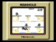
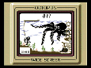
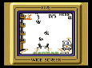
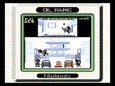

はてさて、ゲームの種類は？ ゲームボーイギャラリーには、マンホール、ファイア、オクトパス、オイル パニックの４種類のゲームが、そして、それぞれに「むかし」モードと「いま」 モードの２種類の合計８種類ものゲームが入っています。 さて、あなたはいくつのゲームでハイスコアが出せるかな？

次々に現れる通行人が マンホールに落ちないよう、 フタを操作しよう！
大ダコの脚をくぐり抜け、 海底深くに眠る宝物を 引きあげろ！


火災発生! 飛び降りて来る 人達を無事に救急車まで 運びこめるか？
配管が壊れた！漏れてくる オイルを受け止めて、この 危機を切り抜けろ！
